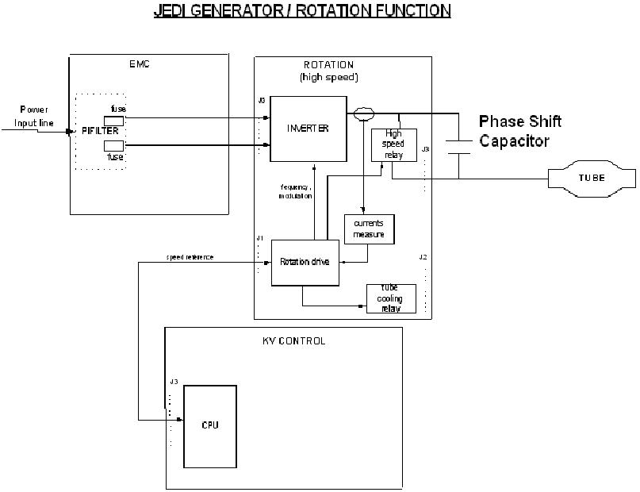

Operating Documentation
Direction 5181166-800, Rev# 7
BrightSpeed Select Service Methods Adv
Operating Documentation |
Rotation function is mainly controlled by the kV control CPU function.
Illustration 1: JEDI generator / rotation function

When the CPU receives the exposure enable signal (either by a communication message or by a real time hardware line both linked to the prep button), it sends the anode speed reference to the rotation function. Upon receiving this command, the rotation drive:
compares it to the present anode speed. If the present speed is lower:
gets from the tube database the current required to accelerate the anode and the acceleration time to apply
drives the inverter with the frequency required for the speed selected
measures the phases currents, compare them to the current demand and applies the modulation rate to supply the right stator current
counts the acceleration time
monitors rotation safeties
sends back each 100ms the speed to the kV control CPU
The speed feedback is used by the kV control CPU to authorize exposure.
Once the acceleration time is complete, the rotation drive applies the inverter current required for the anode speed maintain.
When exposure command goes in its inactive state, the CPU either:
sends a speed=0 command to the rotation to stop the anode rotation
applies a “hold” time to maintain the anode rotation speed before stopping it
applies a “hold” time to maintain the anode rotation speed before going to a low speed mode depending on the application.